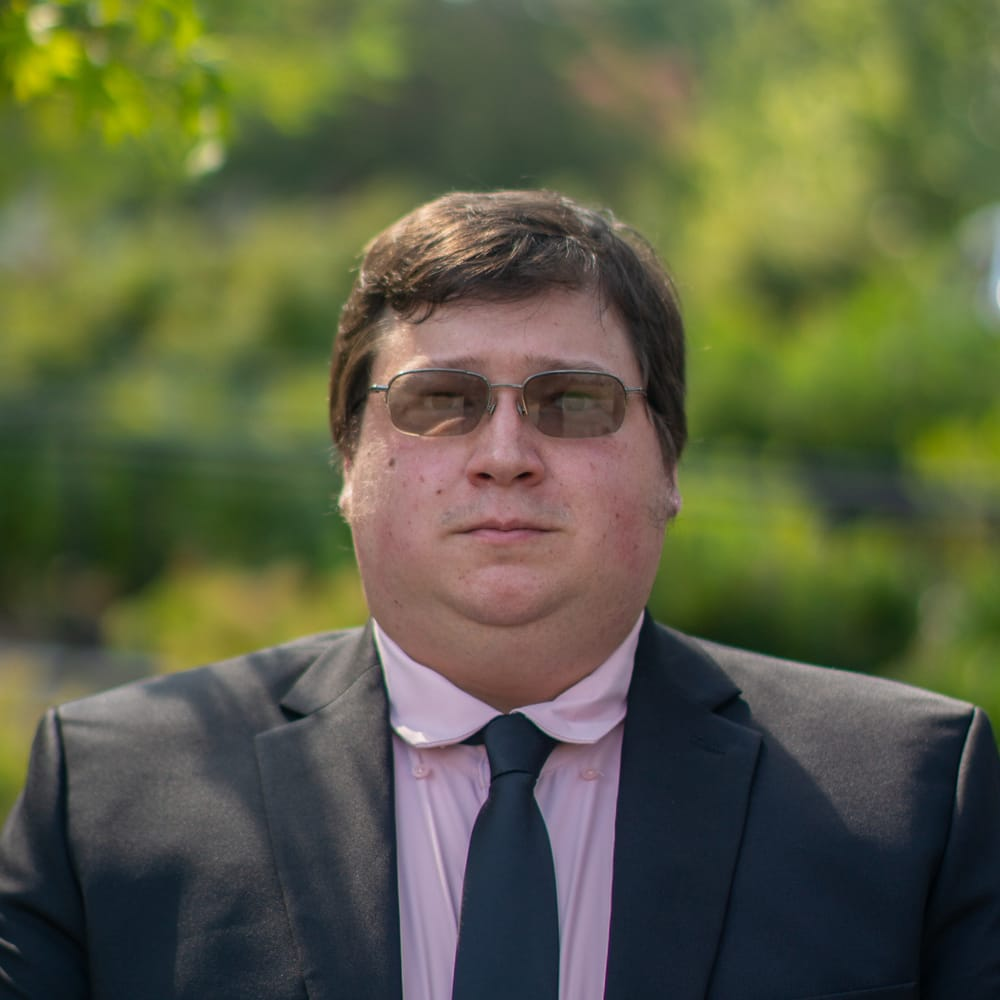
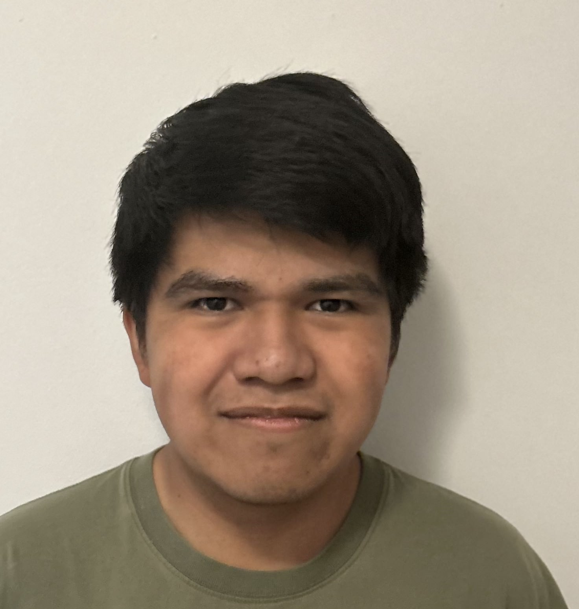
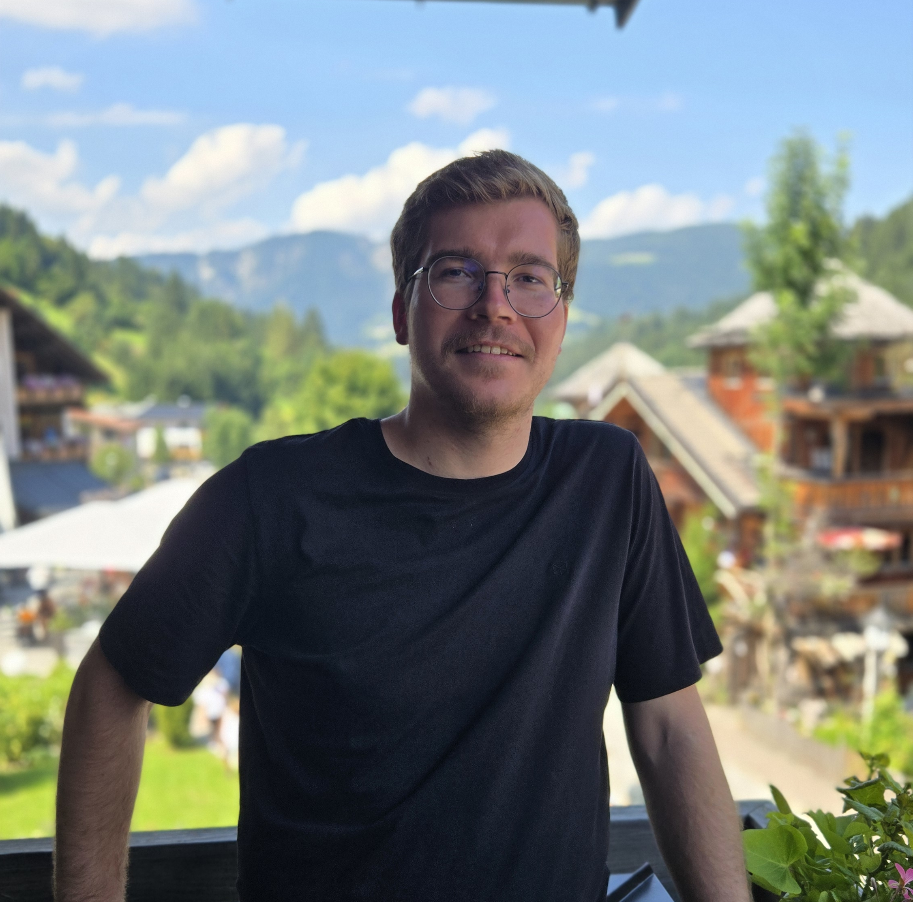

Turn the space around you into a creative arena. Players draw and place their own weapons and armor during a fight, shaping their equipment as the action unfolds.
The goal is to connect that freedom with more accurate body tracking, so the gear players create can follow their movements.
The technical goal
Two viewpoints. Better body tracking.
Players will usually face each other during a fight. We aim to use that shared view to improve body tracking by combining two sources of information.
01
Estimate the body
Start with the player’s headset-based skeleton estimation.
02
Add the opponent’s view
Use the opponent’s camera feed as another perspective on the player’s movements.
03
Place the gear
Fuse those inputs to improve tracking for the weapons and armor players draw.
Meet VR Troopers
Three members · One shared idea

Chris Antepenko
Computer Science · University of Georgia
Chris graduates in Fall 2026. His interests span electronics, game development, cybersecurity, artificial intelligence, and cooking. He brings experience in food service, engineering, and consulting, and works with Java, C++, C, C#, Python, and Arduino.
His projects include the award-winning Ban-Jovi portable synthesizer, a JavaFX CHIP-8 emulator, and published research on microtransactions and gambling in video games. After graduation, he plans to pursue a graduate degree in cybersecurity and privacy.

Mariovan Dominguez
Computer Science · Fourth year
Mariovan’s main areas of focus are game development and data science. Outside of his studies, he enjoys spending time outdoors, running, and folding origami.

Tobias Seeanner
Computer Science · FAU Erlangen-Nuremberg
Tobias is a graduate student pursuing a master’s degree in Computer Science at FAU Erlangen-Nuremberg. Currently on exchange at the University of Georgia in Athens, he works as a research assistant at Noelo Lab, exploring automated program repair and privacy.
His experience combines software development with research into complex systems. At BMW, he developed a concept for automatically controlling navigation display content. He later contributed to the LocalRES energy research project at the University of Passau, where he earned his bachelor’s degree. His thesis investigated decentralized electricity trading between energy cells and received a nomination for the IHK Prize in 2024 in Germany.